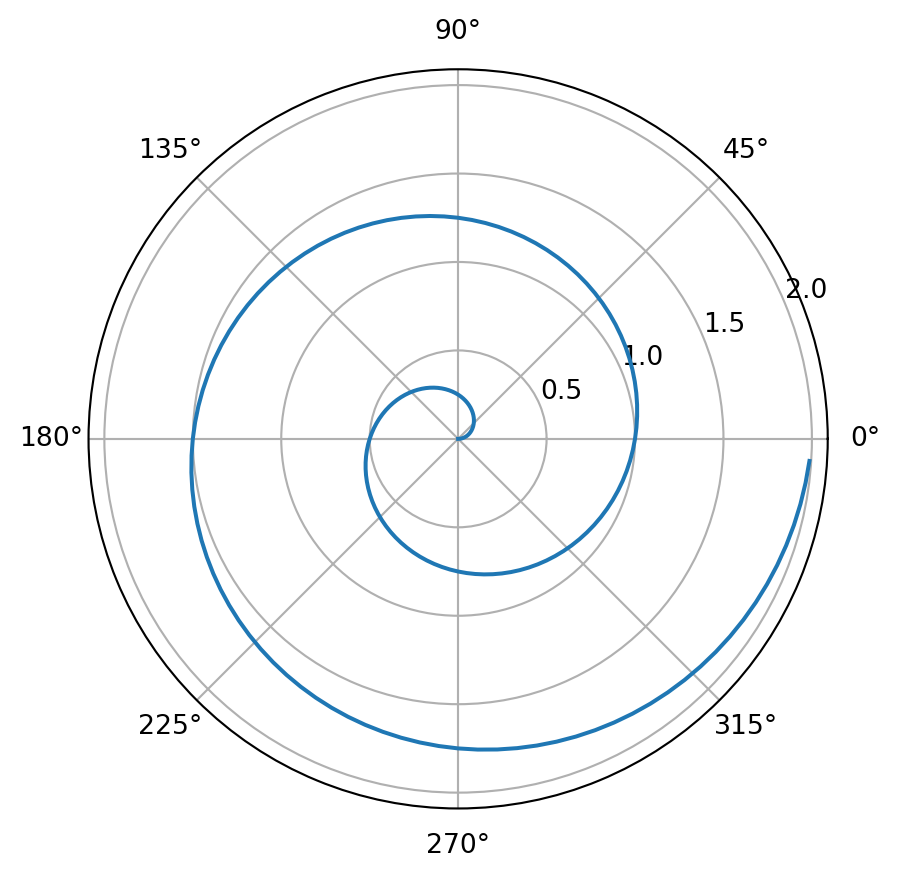

# Imprimir los números del 1 al 5
def impri(n):
for i in range(n):
print(i+1)
impri(8)Ejemplo de Quarto con Python y LaTeX
1 Introducción
Este es un ejemplo de un archivo Quarto que combina texto, código en Python, y contenido matemático usando LaTeX.
1.1 Ecuaciones con LaTeX
Se pueden insertar ecuaciones inline, como esta: \(\int_a^b f(x)\, dx\).
O también centradas/destacadas:
\[ E = mc^2 \tag{1}\]
Más detalles
Esta es otra ecuación con sumatoria:
\[ \overline x = \frac{1}{n} \sum_{i=1}^n x_i \]La fórmula (1) es muy útil.
1.2 Cálculos en Python
Usando #| code-fold: false el código se muetra y usando ‘#| eval: false’ no se ejecuta
Code
# Imprimir los números del 1 al 5
def impri(n):
for i in range(n):
print(i+1)
impri(8)1.3 Gráficos con Python
For a demonstration of a line plot on a polar axis, see Figure 1.
Code
import numpy as np
import matplotlib.pyplot as plt
r = np.arange(0, 2, 0.01)
theta = 2 * np.pi * r
fig, ax = plt.subplots(
subplot_kw = {'projection': 'polar'}
)
ax.plot(theta, r)
ax.set_rticks([0.5, 1, 1.5, 2])
ax.grid(True)
plt.show()
1.4 Usar variables de python en el texto
Code
radius = 5The radius of the circle is 5
1.5 Python code inline
Can you try creating a new function cube to compute cube a of number in the following cell?
Check if your cube function is working correctly by running the following examples.
print(cube(2)) print(cube(3)) print(cube(4))
1.6 Creando imágenes inline a partir de codes con seteo de tamaño incluido
1.7 Callout Blocks
Tip with Title
This is an example of a callout with a title.
Expand To Learn About Collapse
This is an example of a ‘folded’ caution callout that can be expanded by the user. You can use collapse="true" to collapse it by default or collapse="false" to make a collapsible callout that is expanded by default.
bla
algo